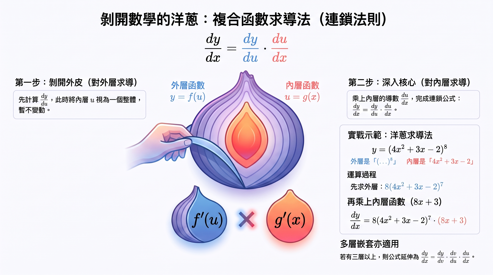

導數入門：從第一原理到鏈式法則
中五／DSE 數學學習報告｜馬Sir教室
無需 VPN
可嵌入 Google Sites
公式需連網載入（KaTeX）
1導言
跑車在「某一個特定瞬間」的速度是多少？曲線上某一點的切線斜率又該如何計算？答案都藏在導數這個微積分核心概念中。本課帶你掌握這項強大工具。
學習目標
- 理解導數的幾何意義與第一原理。
- 掌握基本求導公式與積／商法則。
- 運用鏈式法則處理複合函數。
- 掌握隱函數求導與對數求導。
- 理解二階導數的概念與計算。
2導數的幾何意義與第一原理
曲線上兩點 \(P\)、\(Q\) 的連線是割線。當 \(Q\) 沿曲線無限逼近 \(P\)，割線趨近切線 \(L\)。切線斜率就是該點的瞬時變化率——導數。
\[ \frac{dy}{dx}=\lim_{\Delta x\to 0}\frac{f(x+\Delta x)-f(x)}{\Delta x} \]
極限存在時稱函數在該點可微。第一原理是所有求導公式的基石。
短片
課堂引入或複習用；請直接在頁面播放。
3基礎求導法則：告別極限計算
- 常數法則：\(\dfrac{d}{dx}(k)=0\)
- 冪法則：\(\dfrac{d}{dx}(x^n)=nx^{n-1}\)
- 常數倍：\(\dfrac{d}{dx}[k\cdot f(x)]=k\cdot f'(x)\)
- 和差：\(\dfrac{d}{dx}(u\pm v)=\dfrac{du}{dx}\pm\dfrac{dv}{dx}\)
積法則與商法則
積法則：前導後不導，加後導前不導。
\[ \frac{d}{dx}(uv)=u\frac{dv}{dx}+v\frac{du}{dx} \]
商法則：分母分之（子導母不導，減母導子不導）。
\[ \frac{d}{dx}\left(\frac{u}{v}\right)=\frac{v\dfrac{du}{dx}-u\dfrac{dv}{dx}}{v^2} \]
4複合函數與鏈式法則
求 \(y=(4x^2+3x-2)^8\) 不必展開八次方。設 \(u=4x^2+3x-2\)，則 \(y=u^8\)。鏈式法則：外層變化率乘內層變化率。
\[ \frac{dy}{dx}=\frac{dy}{du}\cdot\frac{du}{dx} \]
小思考：像齒輪傳動——A 對 C 的轉速＝（A 對 B）×（B 對 C）。

資訊圖：外層 \(y=f(u)\)、內層 \(u=g(x)\)；示例 \(y=(4x^2+3x-2)^8\)
5隱函數求導法與對數求導法
隱函數
例如 \(x^2+3y-y^2=4\)，難以單獨解出 \(y\)。步驟：兩邊對 \(x\) 求導（含 \(y\) 的項視為 \(x\) 的函數，乘 \(\dfrac{dy}{dx}\)）；整理後解出 \(\dfrac{dy}{dx}\)。
對數求導
適合複雜乘除，或 \(y=x^x\) 這類底數與指數都含變數的情形：兩邊取 \(\ln y\) → 用對數性質簡化 → 兩邊對 \(x\) 求導 → 解出 \(\dfrac{dy}{dx}\)。
7二階導數：變化率的變化率
對 \(f'(x)\) 再求導得二階導數 \(f''(x)\) 或 \(\dfrac{d^2y}{dx^2}\)。
- \(f(x)\)：位移
- \(f'(x)\)：速度
- \(f''(x)\)：加速度
幾何上：\(f''>0\) 向上凹（微笑）；\(f''<0\) 向下凹（哭臉）。
8總結
- 導數本質：切線斜率＝瞬時變化率。
- 法則：冪、積、商法則可避開繁瑣極限。
- 鏈式法則：複合函數由外而內層層剝開。
- 隱函數／對數：兩邊求導；或先取對數再求導。
- 二階導數：加速度；曲線凹凸。
講義 PDF（完整投影片）
Google Sites 嵌入時，瀏覽器通常會封鎖頁內 PDF 預覽。請用下面按鈕在新分頁開啟或下載。